# Loading libraries needed for the project
library(tidyverse)Introduction
This report describes the plan for a Data Analysis project as described in the scope of the APS for the ‘R for Data Science’ course at Insper.
Dataset - Taxi Trips Chicago 2024

The dataset used will be the Taxi Trips Chicago 2024, found on Kaggle at this link.
The dataset contains a wide range of data about taxi trips made within the city of Chicago during the year 2024 up to April 1st.
The information can be used to explore various patterns of consumption, fare behavior, travel times, locations with a high flow of trips, among other insights relevant for businesses, consumers, taxi drivers, and professionals responsible for public policies that are transport-related.
Key Features
The features contained in this Dataset are listed below along with a description and a brief summary of their values and structures.
# Loading the Dataset
taxi_db <- read_csv("taxi_trips_db.csv")# Editing the name of a column since the author left an extra blank space
taxi_db <- taxi_db |> rename(`Dropoff Centroid Location` = `Dropoff Centroid Location`)
1. Trip ID
A unique identifier for each trip, facilitating easy tracking and analysis.
# Descriptive statistics and examples from the column
summary(taxi_db$`Trip ID`) Length Class Mode
865247 character character # 5 examples of instances
taxi_db$`Trip ID` |> head(5)[1] "0287f53fedcde6b0af9aab9e32cbd2cadb337eaa"
[2] "1f0034299b914fd7b45002568576a353c83acb2f"
[3] "01a0b77b722a0b91f45cb4fc90b3e64f76fd0681"
[4] "14aff2071ac81c6450a8f8b0e1534497da900197"
[5] "16d3a633e2f380cee4a7fa4677db163b6e91255d"
2. Taxi ID
An identifier for the taxi involved in each trip, enabling tracking of individual vehicles.
# Descriptive statistics and examples from the column
summary(taxi_db$`Taxi ID`) Length Class Mode
865247 character character # 5 examples of instances
taxi_db$`Taxi ID` |> head(5)[1] "e54db25f18193a08f1f5754515e8c338480e04fb938ed3db5a0fccface463874280a3d496820aa02ac2c13c5238e2352f4c6cdfafbff3224043a64f366cbdaa4"
[2] "4a263f78f56815be4acd38658af8fc1824ce4e15f7ec818332d18aa9c3f1603033dcd265b3758f1bbb56459581da1a204730a1784c1212546d3a16bc3fcb5309"
[3] "4f1e94982e6851725add382f7981d64006ae7c38f3664f6575ef12ab44c1c6af6e02524b142e95c1d10974f66b6a2eda0d332643b01607e2ca3ff2a7241f6dee"
[4] "de8e8659ceb9eb0da842a46b60c0a5207098ac69fc23ab1d6308a50a42e719c1b9d233d3b57a3591ee5789f9cc7e22e81496194980774e8035033e0788ec2633"
[5] "d79d3e19a1d5f6cb0cd4449d5579412262a2f1b182799d84c7d713a3f94407a121a9000223cae430e4d4b55a23b94d61d064c5c17d1f6bcf227e9df554921b77"
3. Trip Start Timestamp
When the trip started, rounded to the nearest 15 minutes.
# Descriptive statistics and examples from the column
summary(taxi_db$`Trip Start Timestamp`) Length Class Mode
865247 character character # 5 examples of instances
taxi_db$`Trip Start Timestamp` |> head(5)[1] "03/01/2024 12:00:00 AM" "03/01/2024 12:00:00 AM" "03/01/2024 12:00:00 AM"
[4] "03/01/2024 12:00:00 AM" "03/01/2024 12:00:00 AM"
4. Trip End Timestamp
When the trip ended, rounded to the nearest 15 minutes.
# Descriptive statistics and examples from the column
summary(taxi_db$`Trip End Timestamp`) Length Class Mode
865247 character character # 5 examples of instances
taxi_db$`Trip End Timestamp` |> head(5)[1] "03/01/2024 12:00:00 AM" "03/01/2024 12:15:00 AM" "03/01/2024 12:00:00 AM"
[4] "03/01/2024 12:30:00 AM" "03/01/2024 12:15:00 AM"
5. Trip Seconds
Time of the trip in seconds.
# Descriptive statistics and examples from the column
summary(taxi_db$`Trip Seconds`) Min. 1st Qu. Median Mean 3rd Qu. Max. NA's
0 459 900 1151 1591 86340 169 # 5 examples of instances
taxi_db$`Trip Seconds` |> na.omit() |> head(5)[1] 15 900 711 1770 849
6. Trip Miles
Distance of the trip in miles.
# Descriptive statistics and examples from the column
summary(taxi_db$`Trip Miles`) Min. 1st Qu. Median Mean 3rd Qu. Max. NA's
0.000 0.910 3.070 6.563 11.710 3093.470 6 # 5 examples of instances
taxi_db$`Trip Miles` |> na.omit() |> head(5)[1] 0.09 3.00 5.84 13.36 6.13
7. Pickup Census Tract
The Census Tract where the trip began. For privacy, this Census Tract is not shown for some trips. This column often will be blank for locations outside Chicago.
# Descriptive statistics and examples from the column
summary(taxi_db$`Pickup Census Tract`) Min. 1st Qu. Median Mean 3rd Qu. Max. NA's
1.703e+10 1.703e+10 1.703e+10 1.703e+10 1.703e+10 1.703e+10 537996 # 5 examples of instances
taxi_db$`Pickup Census Tract` |> na.omit() |> head(5)[1] 17031980000 17031980000 17031980100 17031060900 17031980000
8. Dropoff Census Tract
The Census Tract where the trip ended. For privacy, this Census Tract is not shown for some trips. This column often will be blank for locations outside Chicago.
# Descriptive statistics and examples from the column
summary(taxi_db$`Dropoff Census Tract`) Min. 1st Qu. Median Mean 3rd Qu. Max. NA's
1.703e+10 1.703e+10 1.703e+10 1.703e+10 1.703e+10 1.703e+10 551393 # 5 examples of instances
taxi_db$`Dropoff Census Tract` |> na.omit() |> head(5)[1] 17031060900 17031980000 17031320100 17031980000 17031060900
9. Pickup Community Area
The Community Area where the trip began. This column will be blank for locations outside Chicago.
# Descriptive statistics and examples from the column
summary(taxi_db$`Pickup Community Area`) Min. 1st Qu. Median Mean 3rd Qu. Max. NA's
1.00 8.00 32.00 36.66 69.00 77.00 23195 # 5 examples of instances
taxi_db$`Pickup Community Area` |> na.omit() |> head(5)[1] 8 24 56 76 8
10. Dropoff Community Area
The Community Area where the trip ended. This column will be blank for locations outside Chicago.
# Descriptive statistics and examples from the column
summary(taxi_db$`Dropoff Community Area`) Min. 1st Qu. Median Mean 3rd Qu. Max. NA's
1.00 8.00 28.00 25.85 32.00 77.00 83853 # 5 examples of instances
taxi_db$`Dropoff Community Area` |> na.omit() |> head(5)[1] 8 8 3 3 28
11. Fare
The fare for the trip.
# Descriptive statistics and examples from the column
summary(taxi_db$`Fare`) Min. 1st Qu. Median Mean 3rd Qu. Max. NA's
0.00 8.00 15.75 22.06 33.75 9999.75 2045 # 5 examples of instances
taxi_db$`Fare` |> na.omit() |> head(5)[1] 3.25 12.00 16.75 34.75 18.51
12. Tips
The tip for the trip. Cash tips generally will not be recorded.
# Descriptive statistics and examples from the column
summary(taxi_db$`Tips`) Min. 1st Qu. Median Mean 3rd Qu. Max. NA's
0.000 0.000 0.000 2.761 4.000 200.000 2045 # 5 examples of instances
taxi_db$`Tips` |> na.omit() |> head(5)[1] 0.00 0.00 4.45 7.85 4.31
13. Tolls
The tolls for the trip. A toll is a fee that must be paid to use certain roads, bridges or tunnels during the trip.
# Descriptive statistics and examples from the column
summary(taxi_db$`Tolls`) Min. 1st Qu. Median Mean 3rd Qu. Max. NA's
0.000 0.000 0.000 0.063 0.000 4444.440 2045 # 5 examples of instances
taxi_db$`Tolls` |> na.omit() |> head(5)[1] 0 0 0 0 0
14. Extras
Extra charges for the trip.
# Descriptive statistics and examples from the column
summary(taxi_db$`Extras`) Min. 1st Qu. Median Mean 3rd Qu. Max. NA's
0.000 0.000 0.000 2.149 3.000 5051.100 2045 # 5 examples of instances
taxi_db$`Extras` |> na.omit() |> head(5)[1] 35 0 5 4 0
15. Trip Total
Total cost of the trip, including fare, tips, tolls, and extras.
# Descriptive statistics and examples from the column
summary(taxi_db$`Trip Total`) Min. 1st Qu. Median Mean 3rd Qu. Max. NA's
0.00 10.00 18.78 27.20 40.90 9999.75 2045 # 5 examples of instances
taxi_db$`Trip Total` |> na.omit() |> head(5)[1] 38.75 12.00 26.70 47.10 22.82
16. Payment Type
Type of payment for the trip.
# Descriptive statistics and examples from the column
summary(taxi_db$`Payment Type`) Length Class Mode
865247 character character # 5 examples of instances
taxi_db$`Payment Type` |> na.omit() |> head(5)[1] "Credit Card" "Cash" "Credit Card" "Credit Card" "Mobile"
17. Company
The taxi company.
# Descriptive statistics and examples from the column
summary(taxi_db$`Company`) Length Class Mode
865247 character character # 5 examples of instances
taxi_db$`Company` |> head(5)[1] "City Service" "Taxi Affiliation Services"
[3] "City Service" "Sun Taxi"
[5] "5 Star Taxi"
18. Pickup Centroid Latitude
The latitude of the center of the pickup census tract or the community area if the census tract has been hidden for privacy. This column often will be blank for locations outside Chicago.
# Descriptive statistics and examples from the column
summary(taxi_db$`Pickup Centroid Latitude`) Min. 1st Qu. Median Mean 3rd Qu. Max. NA's
41.66 41.88 41.90 41.90 41.98 42.02 22966 # 5 examples of instances
taxi_db$`Pickup Centroid Latitude` |> na.omit() |> head(5)[1] 41.89960 41.90121 41.79259 41.98026 41.89960
19. Pickup Centroid Longitude
The longitude of the center of the pickup census tract or the community area if the census tract has been hidden for privacy. This column often will be blank for locations outside Chicago.
# Descriptive statistics and examples from the column
summary(taxi_db$`Pickup Centroid Longitude`) Min. 1st Qu. Median Mean 3rd Qu. Max. NA's
-87.91 -87.77 -87.64 -87.70 -87.63 -87.53 22966 # 5 examples of instances
taxi_db$`Pickup Centroid Longitude` |> na.omit() |> head(5)[1] -87.63331 -87.67636 -87.76962 -87.91362 -87.63331
20. Pickup Centroid Location
The location of the center of the pickup census tract or the community area if the census tract has been hidden for privacy. This column often will be blank for locations outside Chicago.
# Descriptive statistics and examples from the column
summary(taxi_db$`Pickup Centroid Location`) Length Class Mode
865247 character character # 5 examples of instances
taxi_db$`Pickup Centroid Location` |> na.omit() |> head(5)[1] "POINT (-87.6333080367 41.899602111)"
[2] "POINT (-87.6763559892 41.9012069941)"
[3] "POINT (-87.7696154528 41.7925923603)"
[4] "POINT (-87.913624596 41.9802643146)"
[5] "POINT (-87.6333080367 41.899602111)"
21. Dropoff Centroid Latitude
The latitude of the center of the dropoff census tract or the community area if the census tract has been hidden for privacy. This column often will be blank for locations outside Chicago.
# Descriptive statistics and examples from the column
summary(taxi_db$`Dropoff Centroid Latitude`) Min. 1st Qu. Median Mean 3rd Qu. Max. NA's
41.65 41.88 41.89 41.89 41.92 42.02 79675 # 5 examples of instances
taxi_db$`Dropoff Centroid Latitude` |> na.omit() |> head(5)[1] 41.89960 41.89960 41.96581 41.96581 41.87401
22. Dropoff Centroid Longitude
The longitude of the center of the dropoff census tract or the community area if the census tract has been hidden for privacy. This column often will be blank for locations outside Chicago.
# Descriptive statistics and examples from the column
summary(taxi_db$`Dropoff Centroid Longitude`) Min. 1st Qu. Median Mean 3rd Qu. Max. NA's
-87.91 -87.66 -87.63 -87.66 -87.63 -87.53 79675 # 5 examples of instances
taxi_db$`Dropoff Centroid Longitude` |> na.omit() |> head(5)[1] -87.63331 -87.63331 -87.65588 -87.65588 -87.66352
23. Dropoff Centroid Location
The location of the center of the dropoff census tract or the community area if the census tract has been hidden for privacy. This column often will be blank for locations outside Chicago.
# Descriptive statistics and examples from the column
summary(taxi_db$`Dropoff Centroid Location`) Length Class Mode
865247 character character # 5 examples of instances
taxi_db$`Dropoff Centroid Location` |> na.omit() |> head(5)[1] "POINT (-87.6333080367 41.899602111)" "POINT (-87.6333080367 41.899602111)"
[3] "POINT (-87.6558787862 41.96581197)" "POINT (-87.6558787862 41.96581197)"
[5] "POINT (-87.6635175498 41.874005383)"
Data Analysis
Dealing with NA values
Looking at the results of the summary, we noticed a lot of NA values throughout the features. For some of them (features 7,8, 9, 10, 18, 19, 20, 21, 22, 23), the author tells us previously that the column will often or always show NA values for locations outside Chicago.
Because of that, we made a decision of omitting the lines for which those features = NA. We are assuming here that most, if not all, NAs in those columns are due to the fact that the trip was held outside Chicago at some point (either the pickup or dropoff).
We do recognize though two consequences that will follow that decision: (i) that our analysis and any eventual models will not be applicable to trips held outside of Chicago in any direction (pickup or dropoff).; (ii) We may be excluding some lines that for some reason where related to trips held within Chicago, therefore redduccing the amount of data we have.
Even though there are those consequences, we still believe wee can create insightful analysis from the remaining data, understanding though the reduction of scope for which those insights will be applicable.
# Selecting the columns we want to check for NAs
columns_list <- c(
"Pickup Census Tract", "Dropoff Census Tract",
"Pickup Community Area", "Dropoff Community Area",
"Pickup Centroid Latitude", "Pickup Centroid Longitude",
"Pickup Centroid Location", "Dropoff Centroid Latitude",
"Dropoff Centroid Longitude", "Dropoff Centroid Location"
)
# Filtering the dataset
taxi_db_chicago <- taxi_db |>
filter(if_all(all_of(columns_list), ~ !is.na(.))) # Applying !is.na() across all columns in columns_listAlso let’s correct some company names that came slightly different but are referring to the same company.
company_mapping <- c(
"312 Medallion Management Corp" = "312 Medallion Management Corp",
"Medallion Management Corp" = "312 Medallion Management Corp",
"Blue Ribbon Taxi Association Inc." = "Blue Ribbon Taxi Association Inc.",
"Blue Ribbon Taxi Association" = "Blue Ribbon Taxi Association Inc.",
"Blue Ribbon Taxi Association Inc" = "Blue Ribbon Taxi Association Inc.",
"Taxicab Insurance Agency Llc" = "Taxicab Insurance Agency, LLC",
"Taxicab Insurance Agency, LLC" = "Taxicab Insurance Agency, LLC",
"Taxi Affiliation Services" = "Taxi Affiliation Services LLC - Yell",
"Taxi Affiliation Services Llc - Yell" = "Taxi Affiliation Services LLC - Yell",
"Taxi Affiliation Services LLC - Yell" = "Taxi Affiliation Services LLC - Yell",
"Choice Taxi Association Inc" = "Choice Taxi Association Inc",
"Choice Taxi Association" = "Choice Taxi Association Inc"
)
taxi_db_chicago <- taxi_db_chicago |>
mutate(Company = recode(Company, !!!company_mapping))
Now, let’s evaluate the remaining data, and the appearance of NA values in other columns.
# Evaluating other columns for NA values
taxi_db_chicago |>
select(-all_of(columns_list)) |>
summary() Trip ID Taxi ID Trip Start Timestamp Trip End Timestamp
Length:308344 Length:308344 Length:308344 Length:308344
Class :character Class :character Class :character Class :character
Mode :character Mode :character Mode :character Mode :character
Trip Seconds Trip Miles Fare Tips
Min. : 0.0 Min. : 0.000 Min. : 0.00 Min. : 0.00
1st Qu.: 346.0 1st Qu.: 0.700 1st Qu.: 6.25 1st Qu.: 0.00
Median : 570.0 Median : 1.330 Median : 9.00 Median : 2.00
Mean : 944.7 Mean : 5.014 Mean : 17.75 Mean : 3.09
3rd Qu.: 1374.0 3rd Qu.: 5.300 3rd Qu.: 33.00 3rd Qu.: 4.00
Max. :86340.0 Max. :664.900 Max. :814.00 Max. :110.00
NA's :57 NA's :3 NA's :1084 NA's :1084
Tolls Extras Trip Total Payment Type
Min. : 0.000 Min. : 0.000 Min. : 0.00 Length:308344
1st Qu.: 0.000 1st Qu.: 0.000 1st Qu.: 7.75 Class :character
Median : 0.000 Median : 0.000 Median : 11.22 Mode :character
Mean : 0.025 Mean : 1.459 Mean : 22.56
3rd Qu.: 0.000 3rd Qu.: 2.000 3rd Qu.: 43.00
Max. :4444.440 Max. :5051.100 Max. :8896.63
NA's :1084 NA's :1084 NA's :1084
Company
Length:308344
Class :character
Mode :character
It is interesting to note that for some features, there is exactly the same number of NAs. Let’s investigate those lines further.
temp_db <- taxi_db_chicago |>
filter(is.na(taxi_db_chicago$Fare)) |>
select(-all_of(columns_list))
temp_db |> summary() Trip ID Taxi ID Trip Start Timestamp Trip End Timestamp
Length:1084 Length:1084 Length:1084 Length:1084
Class :character Class :character Class :character Class :character
Mode :character Mode :character Mode :character Mode :character
Trip Seconds Trip Miles Fare Tips Tolls
Min. : 0.0 Min. : 0.000 Min. : NA Min. : NA Min. : NA
1st Qu.: 268.0 1st Qu.: 0.590 1st Qu.: NA 1st Qu.: NA 1st Qu.: NA
Median : 501.0 Median : 1.255 Median : NA Median : NA Median : NA
Mean : 932.4 Mean : 4.769 Mean :NaN Mean :NaN Mean :NaN
3rd Qu.:1288.0 3rd Qu.: 4.105 3rd Qu.: NA 3rd Qu.: NA 3rd Qu.: NA
Max. :7193.0 Max. :47.830 Max. : NA Max. : NA Max. : NA
NA's :35 NA's :1084 NA's :1084 NA's :1084
Extras Trip Total Payment Type Company
Min. : NA Min. : NA Length:1084 Length:1084
1st Qu.: NA 1st Qu.: NA Class :character Class :character
Median : NA Median : NA Mode :character Mode :character
Mean :NaN Mean :NaN
3rd Qu.: NA 3rd Qu.: NA
Max. : NA Max. : NA
NA's :1084 NA's :1084 temp_db |> group_by(temp_db$`Payment Type`) |>
summarise(Count = n()) |>
mutate(Percentage = Count / sum(Count) * 100)# A tibble: 3 × 3
`temp_db$\`Payment Type\`` Count Percentage
<chr> <int> <dbl>
1 Cash 1032 95.2
2 Credit Card 35 3.23
3 Mobile 17 1.57
As we can see, for most of this data the payment method is cash, what makes sense since it is harder to track Fare, Tips, Extras, Tolls and therefore Trip Totals when the user is paying by cash.
In order to not loose those values and to maintain consistency, we can fill those NAs with the Median Value of the column. We can do that for all numeric columns.
# Filling the NAs with median value
taxi_db_chicago <- taxi_db_chicago |>
mutate(across(where(is.numeric), ~ifelse(is.na(.), median(., na.rm = TRUE), .))) # Usando função anônima com .Data Types
As we could see from the summaries above, some data types are not the ideal for data analysis. For example, the timestamps are of type character in the dataset. We could definetely, during the analysis, convert them to objects that are more related to standard time formats, that way it will be easier to manipulate this data, build models and extract insight from them.
taxi_db_chicago |>
select(`Trip End Timestamp`, `Trip Start Timestamp`) |>
sapply(class) |>
print() Trip End Timestamp Trip Start Timestamp
"character" "character" ## Converting to datetime
# Transformando a classe das colunas de tempo para tipo data
taxi_db_chicago <- taxi_db_chicago |>
mutate(
`Trip Start Timestamp` = mdy_hms(`Trip Start Timestamp`, tz = "America/Chicago"),
`Trip End Timestamp` = mdy_hms(`Trip End Timestamp`, tz = "America/Chicago")
)
Final Dataset
From now on we will use this treated version of the dataset, the treated dataset is called trips_chicago.
# New dataset
trips_chicago <- taxi_db_chicago
Descriptive Statistics
In the section Key Features we already called a summary() and a head() for a brief overview of the possible variables. Also, in this section we looked at some basic statistics such as mean, median, max and others. However, we can go deeper in this analysis by plotting histograms and box plots in order to get a better understanding of distributions. Also, we can benefit from an understanding of the behavior of dispersion and variance through the dataset features, pretty useful for some models.
library(ggcorrplot)
# List of variables for descriptive analysis
variables <- c("Trip Seconds", "Trip Miles", "Fare", "Tips", "Extras", "Trip Total")
# Plotting histograms and box plots for each variable after log transformation
for (var in variables) {
# Add a small constant to handle zero values
trips_chicago <- trips_chicago |> mutate("{var}_log" := log1p(.data[[var]]))
# Histogram for log-transformed variable
p1 <- ggplot(trips_chicago, aes(x = .data[[paste0(var, "_log")]])) +
geom_histogram(bins = 30, fill = "#feb303", color = "black") +
labs(title = paste("Log-Transformed Histogram of", var), x = paste(var, "(log)"), y = "Density (%)")
print(p1)
# Box plot for log-transformed variable
p2 <- ggplot(trips_chicago, aes(y = .data[[paste0(var, "_log")]])) +
geom_boxplot(fill = "#feb303", color = "black") +
labs(title = paste("Log-Transformed Boxplot of", var), y = paste(var, "(log)"))
print(p2)
}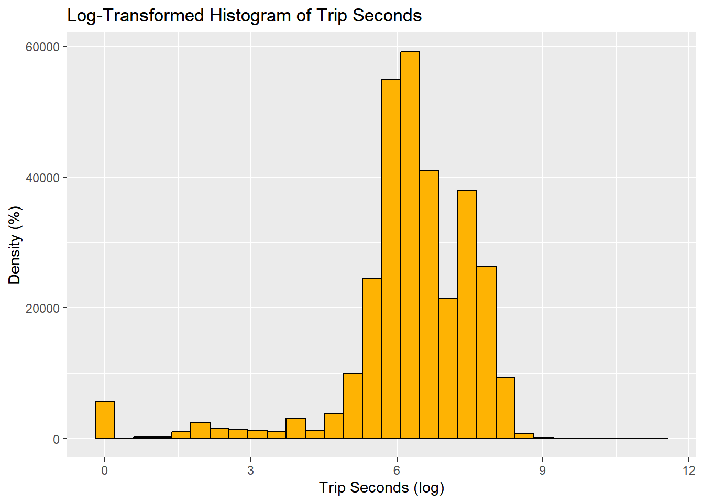
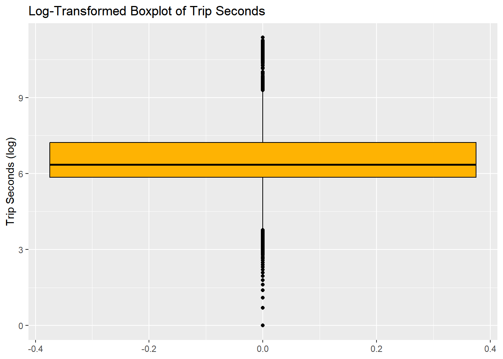
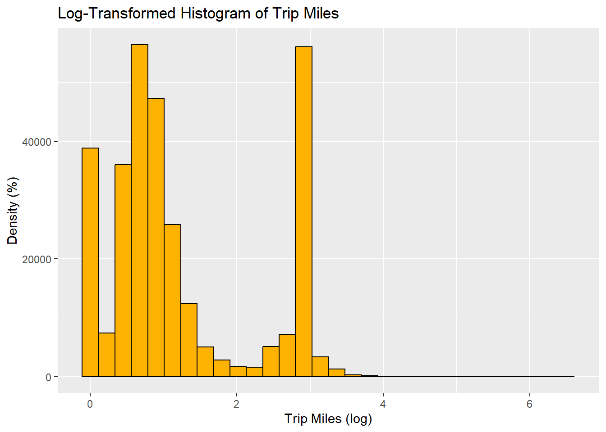
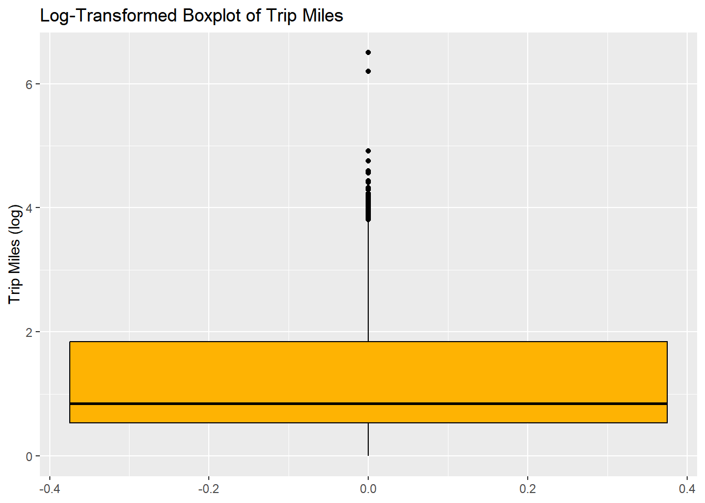
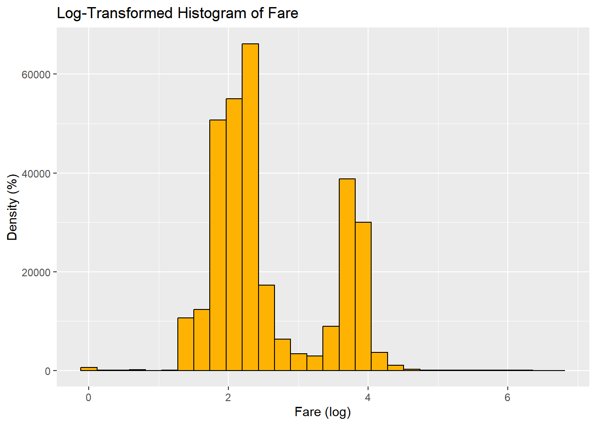
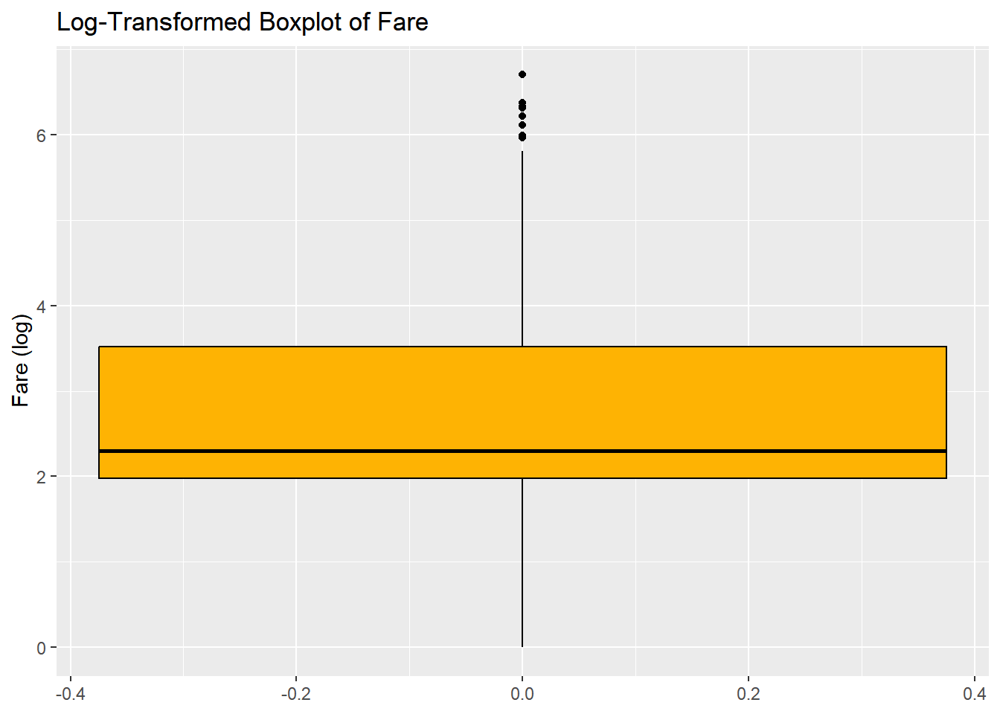
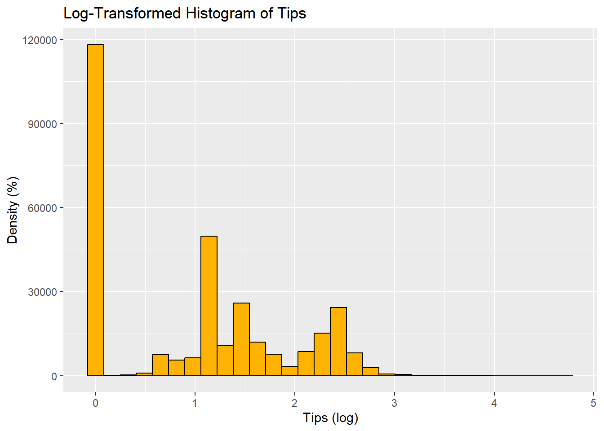
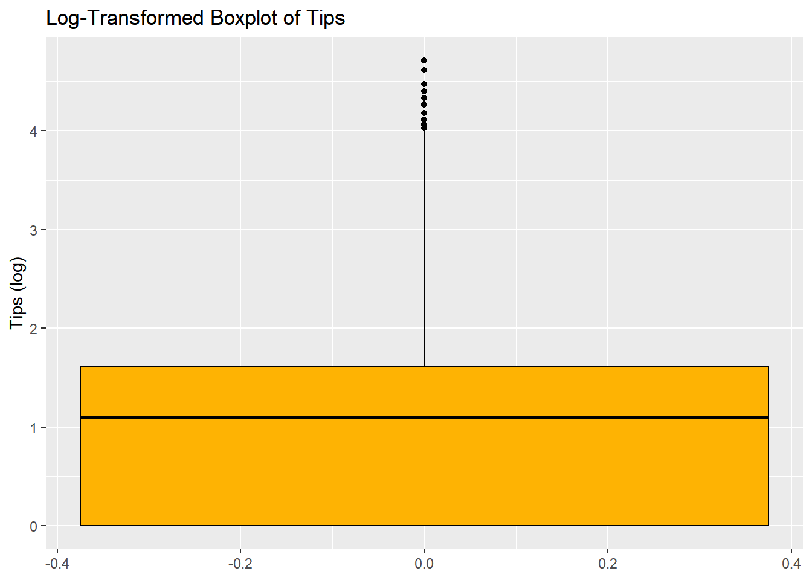
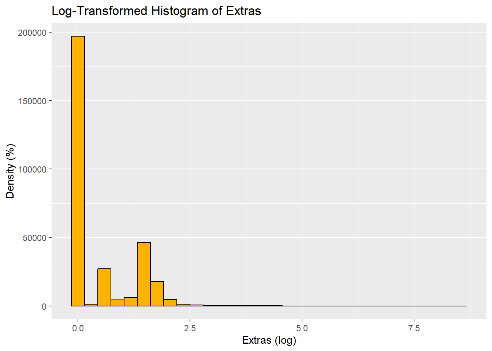
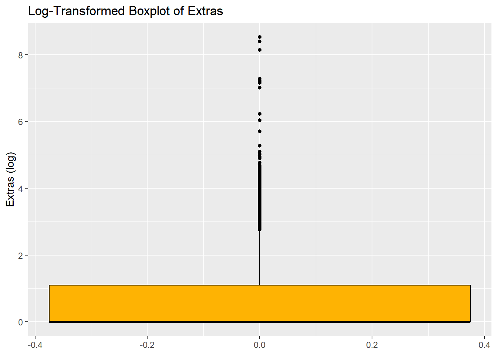
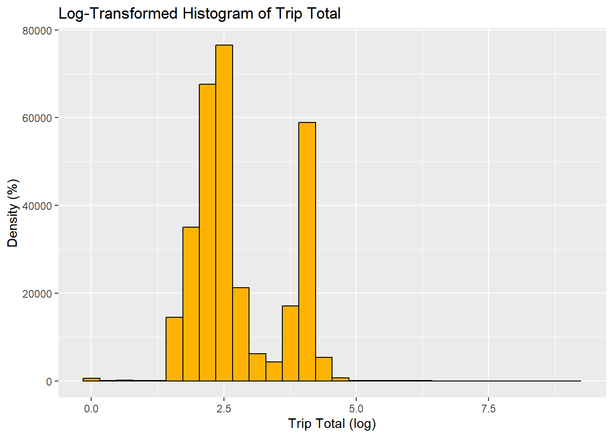
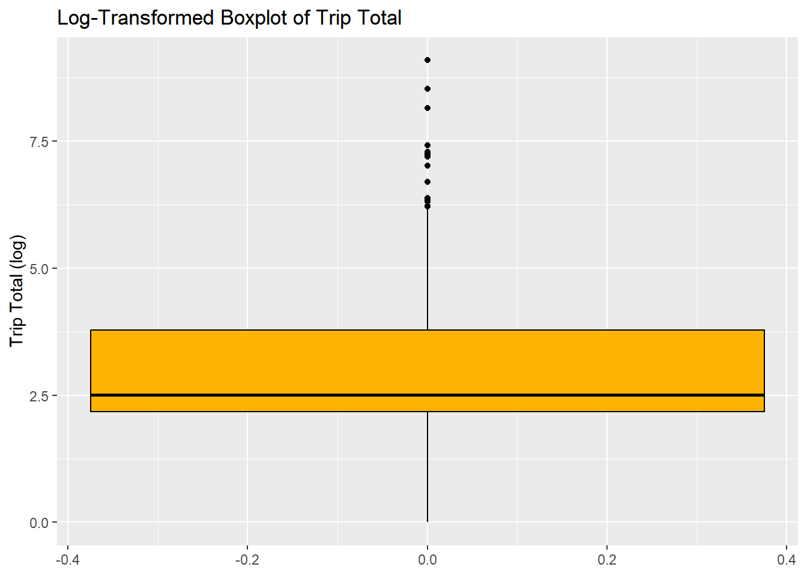
# Analyzing variance and dispersion for log-transformed variables
for (var in variables) {
log_var <- paste0(var, "_log")
if (log_var %in% colnames(trips_chicago)) {
var_summary <- trips_chicago |> summarize(
mean = mean(.data[[log_var]], na.rm = TRUE),
median = median(.data[[log_var]], na.rm = TRUE),
sd = sd(.data[[log_var]], na.rm = TRUE),
var = var(.data[[log_var]], na.rm = TRUE),
min = min(.data[[log_var]], na.rm = TRUE),
max = max(.data[[log_var]], na.rm = TRUE),
q1 = quantile(.data[[log_var]], 0.25, na.rm = TRUE),
q3 = quantile(.data[[log_var]], 0.75, na.rm = TRUE)
)
print(paste("Descriptive Statistics for Log-Transformed", var))
print(var_summary)
}
}[1] "Descriptive Statistics for Log-Transformed Trip Seconds"
# A tibble: 1 × 8
mean median sd var min max q1 q3
<dbl> <dbl> <dbl> <dbl> <dbl> <dbl> <dbl> <dbl>
1 6.27 6.35 1.40 1.96 0 11.4 5.85 7.23
[1] "Descriptive Statistics for Log-Transformed Trip Miles"
# A tibble: 1 × 8
mean median sd var min max q1 q3
<dbl> <dbl> <dbl> <dbl> <dbl> <dbl> <dbl> <dbl>
1 1.22 0.846 1.01 1.03 0 6.50 0.531 1.84
[1] "Descriptive Statistics for Log-Transformed Fare"
# A tibble: 1 × 8
mean median sd var min max q1 q3
<dbl> <dbl> <dbl> <dbl> <dbl> <dbl> <dbl> <dbl>
1 2.57 2.30 0.812 0.660 0 6.70 1.98 3.52
[1] "Descriptive Statistics for Log-Transformed Tips"
# A tibble: 1 × 8
mean median sd var min max q1 q3
<dbl> <dbl> <dbl> <dbl> <dbl> <dbl> <dbl> <dbl>
1 0.990 1.10 0.911 0.831 0 4.71 0 1.61
[1] "Descriptive Statistics for Log-Transformed Extras"
# A tibble: 1 × 8
mean median sd var min max q1 q3
<dbl> <dbl> <dbl> <dbl> <dbl> <dbl> <dbl> <dbl>
1 0.505 0 0.747 0.559 0 8.53 0 1.10
[1] "Descriptive Statistics for Log-Transformed Trip Total"
# A tibble: 1 × 8
mean median sd var min max q1 q3
<dbl> <dbl> <dbl> <dbl> <dbl> <dbl> <dbl> <dbl>
1 2.77 2.50 0.844 0.712 0 9.09 2.17 3.78# Create log-transformed variables for correlation analysis
trips_chicago <- trips_chicago |>
mutate(
Trip_Seconds_log = log1p(`Trip Seconds`),
Trip_Miles_log = log1p(`Trip Miles`),
Fare_log = log1p(Fare),
Tips_log = log1p(Tips),
Extras_log = log1p(Extras),
Trip_Total_log = log1p(`Trip Total`)
)
# Select the log-transformed variables for correlation analysis
log_transformed_vars <- trips_chicago |>
select(Trip_Seconds_log, Trip_Miles_log, Fare_log, Tips_log, Extras_log, Trip_Total_log)
# Compute the correlation matrix
cor_matrix <- cor(log_transformed_vars, use = "complete.obs")
# Plot the correlation matrix
ggcorrplot(cor_matrix,
hc.order = TRUE,
type = "lower",
lab = TRUE,
lab_size = 3.5,
method = "circle",
colors = c("#6D9EC1", "white", "#E46726"),
title = "Correlation Matrix of Log-Transformed Variables",
ggtheme = theme_minimal()) +
theme(
plot.title = element_text(size = 15, face = "bold", hjust = 0.5),
axis.text.x = element_text(angle = 45, vjust = 1, hjust = 1),
axis.text.y = element_text(angle=0)
)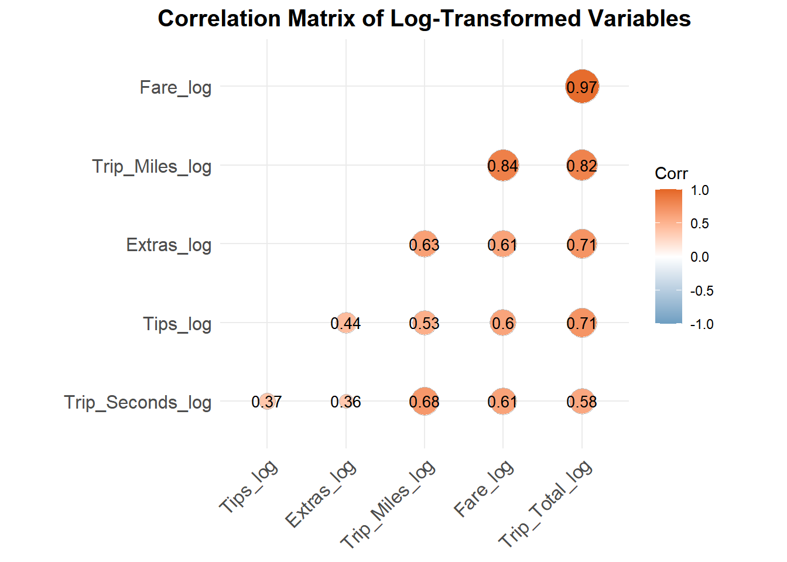
library(ggplot2) # Already in tidyverse
theme_set(theme_bw())
# Example of histogram
trips_chicago |>
ggplot(aes(x = taxi_db_chicago$`Trip Miles`, y=..density..)) +
geom_histogram(bins = 25, fill = "#feb303", color = "black") +
xlim(0, 75) +
ylim(0, 0.045) +
labs(title = "Histogram for Trip Miles", x = "Trip Miles", y = "Density (%)")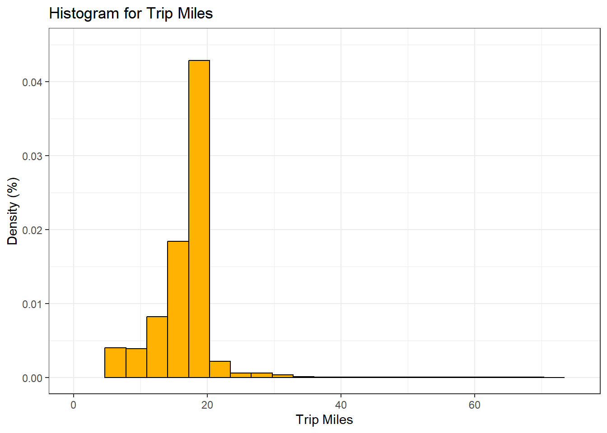
theme_set(theme_bw())
# Example of boxplot
trips_chicago |>
ggplot(aes(y = trips_chicago$`Trip Miles`)) +
geom_boxplot(fill = "#feb303", color = "black") +
ylim(0,5) +
labs(title = "Boxplot for Trip Miles", y = "Trip Miles")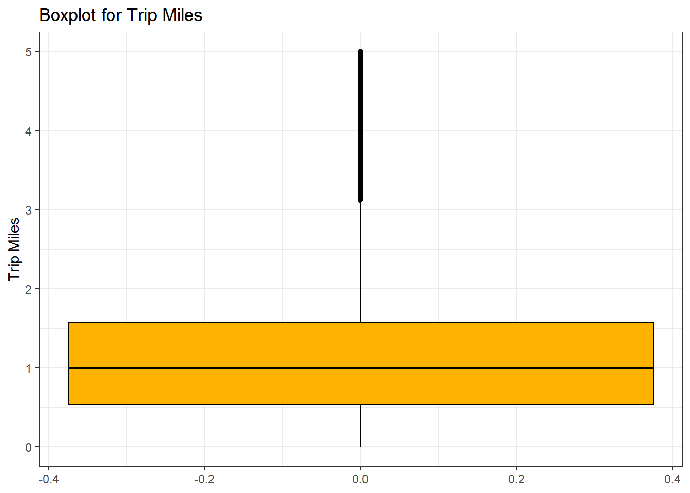
Trying to plot this boxplot, for example, already shows the strong concentration of trips in the ‘few miles’ category, what can also be seen in the histogram. Such kind of distribution will definetely interfere with the way we analyze this feature, we will probably need to apply some transformations to it such as applying log.
Geographical analysis
We can use libraries that will help us plot in Chicago’s Map the places with most pickups or dropoffs. We can also visualize the data segmented by company in order to grasp a better understanding of market dynamics and competition landscape.
Below we have the maps for pickups and dropoffs
library(ggplot2)
library(sf)Linking to GEOS 3.11.2, GDAL 3.8.2, PROJ 9.3.1; sf_use_s2() is TRUElibrary(dplyr)
# Maps for Pickups
# Convert to an sf object using Pickup Centroid Longitude and Pickup Centroid Latitude
pickup_sf <- trips_chicago |>
st_as_sf(coords = c("Pickup Centroid Longitude", "Pickup Centroid Latitude"), crs = 4326, agr = "constant")
# Read the Chicago shapefile
chicago_shapefile <- st_read("boundaries/chicago_shape.shp")Reading layer `chicago_shape' from data source
`C:\Users\jhcsa\Documents\siteRforDS\boundaries\chicago_shape.shp'
using driver `ESRI Shapefile'
Simple feature collection with 77 features and 9 fields
Geometry type: MULTIPOLYGON
Dimension: XY
Bounding box: xmin: -87.94011 ymin: 41.64454 xmax: -87.52414 ymax: 42.02304
Geodetic CRS: WGS 84ggplot() +
geom_sf(data = chicago_shapefile, fill = "lightblue", color = "black") +
geom_sf(data = pickup_sf, color = "red", size = 1, alpha = 0.5) +
theme_minimal() +
labs(
title = "Map of Chicago with Pickup Points",
x = "Longitude", y = "Latitude"
)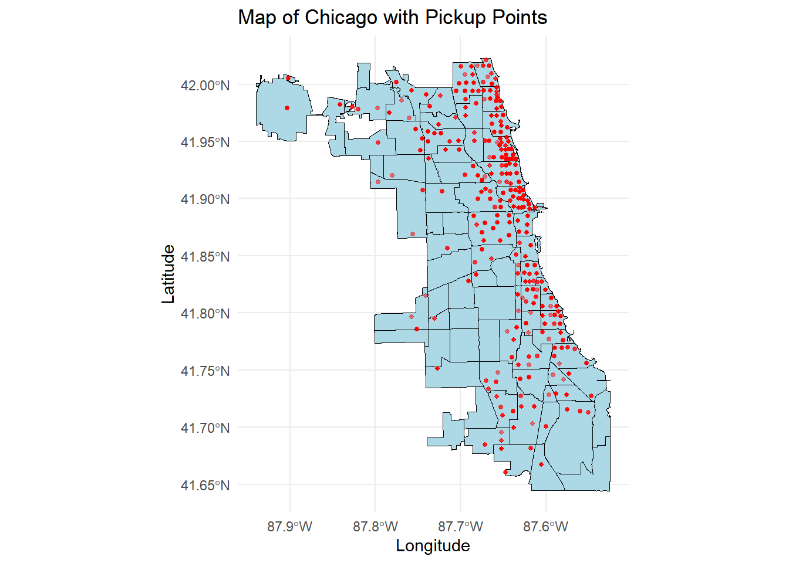
# Maps for Dropoffs
pickup_sf <- trips_chicago |>
st_as_sf(coords = c("Dropoff Centroid Longitude", "Dropoff Centroid Latitude"), crs = 4326, agr = "constant")
ggplot() +
geom_sf(data = chicago_shapefile, fill = "lightblue", color = "black") +
geom_sf(data = pickup_sf, color = "red", size = 1, alpha = 0.5) +
theme_minimal() +
labs(
title = "Map of Chicago with Dropoff Points",
x = "Longitude", y = "Latitude"
)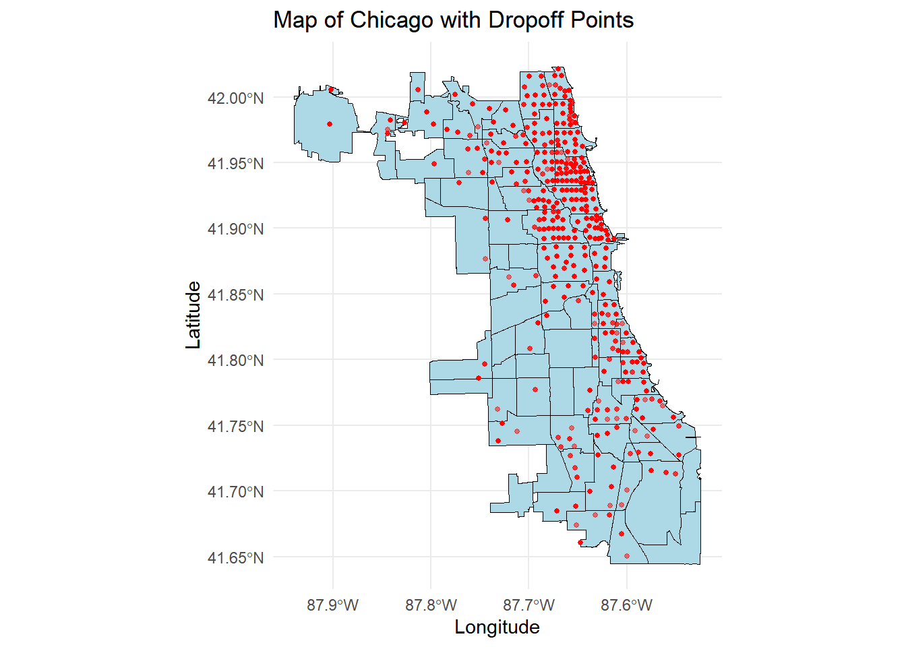
Below we have the map segmenting pickup per company and showing the amount of trips for each location
library(RColorBrewer)
# Creating aggregate database for segmenting
aggregated_data <- trips_chicago |>
group_by(`Pickup Centroid Longitude`, `Pickup Centroid Latitude`, Company) |>
summarise(Trip_Count = n()) |>
ungroup()`summarise()` has grouped output by 'Pickup Centroid Longitude', 'Pickup
Centroid Latitude'. You can override using the `.groups` argument.# Calculate the total number of trips per company
company_trip_counts <- aggregated_data |>
group_by(Company) |>
summarise(Total_Trips = sum(Trip_Count)) |>
arrange(desc(Total_Trips))
# Reorder the Company factor levels based on the number of trips
aggregated_data <- aggregated_data |>
mutate(Company = factor(Company, levels = company_trip_counts$Company))
# Create a custom color scale with different colors for the top companies
top_n <- 10 # Number of top comps
distinct_colors <- c(
RColorBrewer::brewer.pal(min(top_n, 8), "Set1"),
RColorBrewer::brewer.pal(min(top_n - 8, 8), "Set2"),
RColorBrewer::brewer.pal(min(top_n - 16, 12), "Set3")
)
# Assign distinct colors to the top companies
company_colors <- setNames(
c(distinct_colors, rep("grey", length(company_trip_counts$Company) - length(distinct_colors))),
company_trip_counts$Company
)
# Convert to an sf object using Pickup Centroid Longitude and Pickup Centroid Latitude
pickup_sf <- st_as_sf(aggregated_data, coords = c("Pickup Centroid Longitude", "Pickup Centroid Latitude"), crs = 4326, agr = "constant")
# Read the Chicago shapefile
chicago_shapefile <- st_read("boundaries/chicago_shape.shp")Reading layer `chicago_shape' from data source
`C:\Users\jhcsa\Documents\siteRforDS\boundaries\chicago_shape.shp'
using driver `ESRI Shapefile'
Simple feature collection with 77 features and 9 fields
Geometry type: MULTIPOLYGON
Dimension: XY
Bounding box: xmin: -87.94011 ymin: 41.64454 xmax: -87.52414 ymax: 42.02304
Geodetic CRS: WGS 84# Plot the map with the pickup points, colored by Company and sized by the number of trips
ggplot() +
geom_sf(data = chicago_shapefile, fill = "lightblue", color = "black") +
geom_sf(data = pickup_sf, aes(color = Company, size = Trip_Count), alpha = 1) +
scale_size_continuous(name = "Trip Count", range = c(1, 10)) + # Adjust the range as needed
theme_minimal() +
labs(
title = "Map of Chicago with Pickup Points Colored by Company and Sized by Trip Count",
x = "Longitude", y = "Latitude"
) +
scale_color_manual(name = "Company", values = company_colors) +
guides(color = guide_legend(ncol = 2, override.aes = list(size = 4)),
size = guide_legend(order = 1)) +
theme(
legend.position = "right",
legend.text = element_text(size = 8),
legend.title = element_text(size = 10),
legend.key.size = unit(0.5, "lines")
)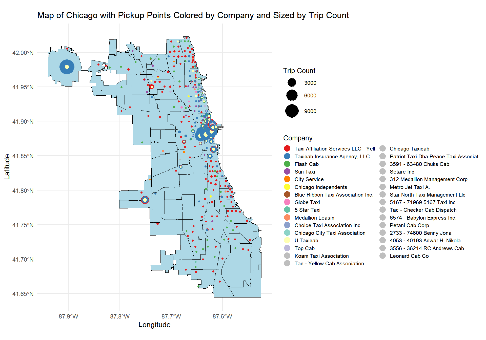
Econometrics and Machine Learning models
As a more sophisticated way for using the dataset to extract insights, we can leverage Machine Learning models for prediction and clustering.
Here we used a Linear Regression fro Fare, a Random Forest for Fare Prediction and K-Means + PCA to cluster the trips and get a better understanding opf the clusters in 2 dimensions.
Due to the lack of computational resources, we conducted this part of the analysis in a Jupyter Notebook in Google Collab. Link for the notebook